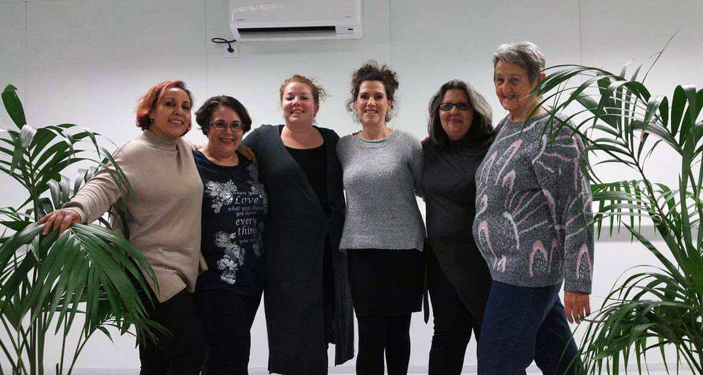
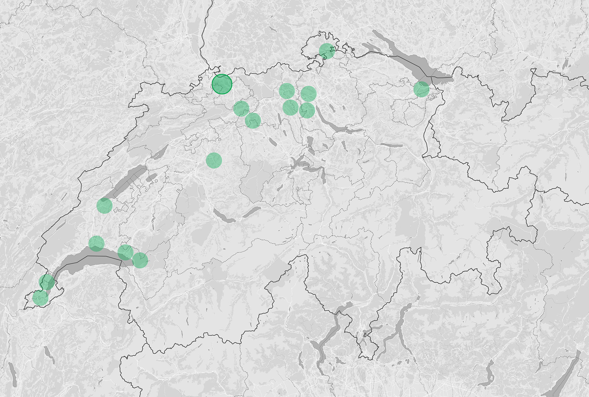
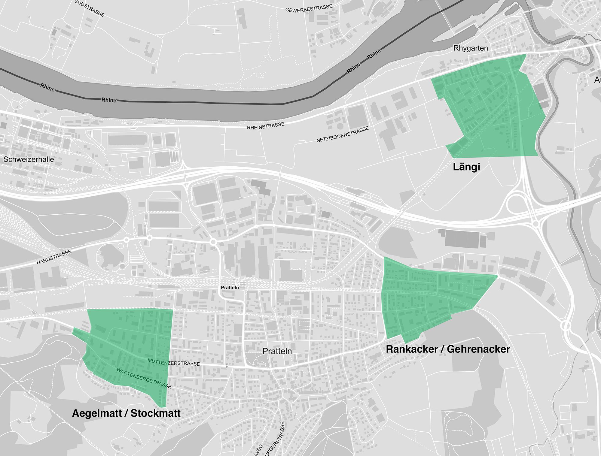
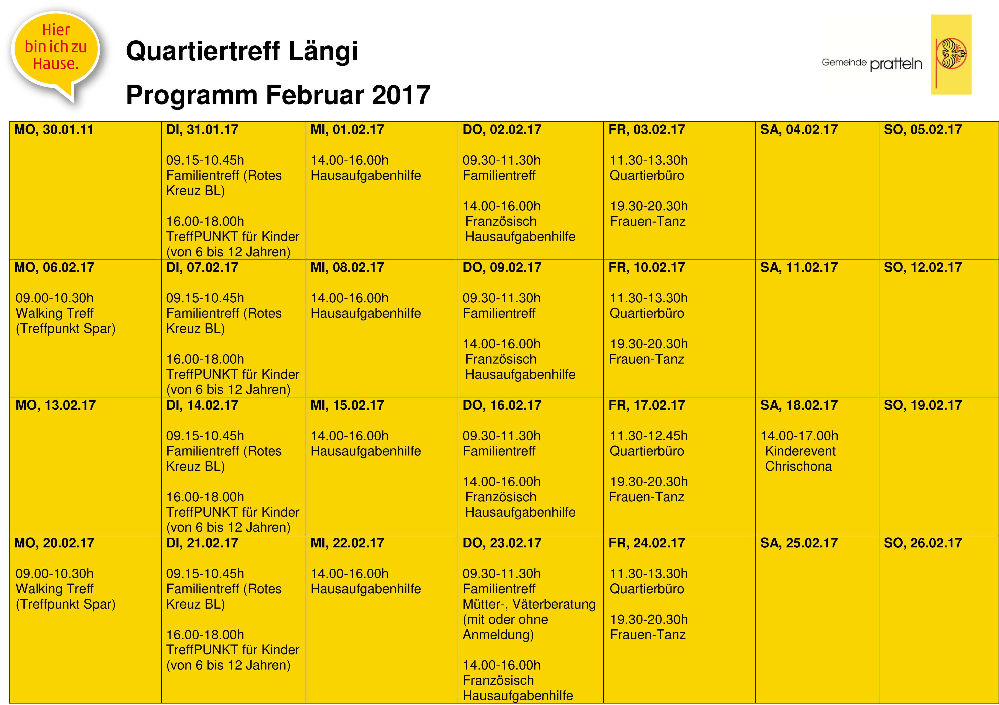

Welcome to our world
Aus dem Container hinter den Hochhäusern wummern laute Bässe. Es ist dunkel, der Wind fegt um die hohen Plattenbauten und die Wiesen zwischen ihnen sind schnee- und eisbedeckt. Es ist kalt. Die Gesichter der wenigen Längianer, denen ich auf meinem Weg begegne, kann ich nicht erkennen. Vor jedem Gesicht steht eine weisse Atemwolke.
Längianer? Ja, so nennen sich die Bewohner hier in Pratteln.
Mein erstes Ziel, der Container, ist einer der Orte, wo sich die Leute aus dem Quartier treffen. Und ihr Quartier, das ist die Längi, an der nordöstlichsten Ecke der Gemeinde Pratteln im Kanton Baselland gelegen. Hier wohnen auf 14 Hektaren knapp 2500 Menschen aus 49 unterschiedlichen Nationen. Ein multikultureller Mikrokosmos, ein Abbild der Schweizer Gesellschaft auf kleinstem Raum.
Im Container — die Betreiber bestehen vergeblich auf die Bezeichnung «Quartierbüro» — trifft sich jeden Freitagabend eine Tanzgruppe für Frauen. So auch heute. Als ich näher komme, höre ich den Zumba-Klassiker schlechthin, den brasilianischen Chartserfolg «Ai se eu te pego», gepaart mit Gelächter und Instruktionsanweisungen.
Das Quartierbüro steht seit eineinhalb Jahren sinnbildlich für die Entwicklung, in der sich die Längi befindet. Entstanden ist es nämlich im Rahmen eines Programms des Bundes – dem «Projet Urbain». Dazu später mehr.
Heute wird im Container geprobt, denn dem Frauentanz, wie sich die Gruppe nennt, steht ein Auftritt bevor. Am Dankesevent, den die Gemeinde Pratteln für ihre ehrenamtlichen Quartierhelferinnen und -helfer organisiert, sorgen die Frauen für eine kleine Showeinlage. «Sonst tanzen wir einfach zum Spass und aus Freude am Frausein», erzählt Olga, die mit 74 Jahren mit Abstand die älteste der Gruppe ist. Auch sie habe sich früher aktiv für die Längi eingesetzt, sagt sie. Aber heute, in dem Alter, gehe das nicht mehr so gut wie früher.
«Das ist etwas, das wir nur für uns machen. Für unsere Gesundheit und für den Zusammenhalt im Quartier», sagt die Marokkanerin Rabia. Sie und ihre Kollegin Sarah aus Deutschland sind die Organisatorinnen des «Frauentanz» und walten heute bei der Probe als Choreografinnen der Gruppe. Rabia und Sarah engagieren sich auch sonst im Quartierbüro und haben als Teil der sogenannten Betriebsgruppe, die den Container verwaltet, verschiedene Angebote ins Leben gerufen.
So bleibt der Raum nicht nur ein Tanzstudio, sondern ist gleichzeitig Schulzimmer für Nachhilfe-Unterricht oder Wohnzimmer für den Familientreff. Am Wochenende dient er ausserdem als mietbarer Partyraum. Multifunktional, auf alle Bedürfnisse anwendbar muss er sein.
Weshalb hat es nicht für einen richtigen Bau gereicht? «Man hat uns gesagt, das sei lediglich ein Provisorium. Mit dem Salina-Raurica-Projekt wird sich hier noch einiges verändern», sagt Rabia.
In der Längi entstehen die ersten Wohnblocks während des Koreakrieges, weshalb diese Mehrfamilienhäuser auch «Korea-Blöcke» genannt werden.
Die Längi entwickelt sich zu einem Dörfchen im Dorf, erhält eine eigene Schulanlage und Kindergärten.
Nach dem grossen Erfolg des ersten Quartierfestes – dem «Längifest», das es bis heute gibt — wird der Quartierverein gegründet. «Er sieht seine Hauptaufgabe in der Verbesserung der infrastrukturellen Einrichtungen zur Erlangung einer höchstmöglichen Lebens- und Wohnqualität», heisst es in den Statuten.
Der fertig gebaute Robinson-Spielsplatz wird der Pratteler Jugend übergeben. Der Quartierverein hilft gemeinsam mit der Gemeinde bei dessen Finanzierung auf einer gemeindeeigenen Parzelle. Heute ist der «Robi» eine Gemeindeinstitution.
Das Quartier wächst. Der vierte Kindergarten wird eröffnet.
Die Pratteler Stimmberechtigten bewilligen einen Kredit von 2,14 Millionen Franken für den «Grüngürtel Längi». Er soll das Quartier vom angrenzenden Gewerbe- und Industriegebiet trennen.
In dieser Zeit entsteht der schlechte Ruf der Längi. Immer wieder gerät das Quartier unfreiwillig in die Schlagzeilen. Gewalttätige Konflikte und Familienfehden sind die Gründe.
Der Einwohnerrat spricht sich für eine 30er-Zone im Längi-Quartier aus. Das kommt vor allem den vielen Kindern im Quartier zugute.
Mit dem Fahrplanwechsel fahren die Busse nun auch nach 20 Uhr in die Längi und aus dem Quartier raus.
Das «Projet Urbain» geht in Pratteln mit der Längi in die erste Projektphase. Gleichzeitig wird die S-Bahn-Haltestelle «Salina Raurica» eröffnet und sorgt für eine bessere Vernetzung mit der Muttergemeinde und Basel.
Wird in der Region von der Längi gesprochen oder geschrieben, ist der Begriff «Problemquartier» meist nicht weit.
Negativ-Schlagzeilen prägten viele Jahre den Ruf des Viertels.
Hört man sich heute unter den langjährigen Bewohnern um, so sind sich die meisten einig: es ist im Laufe der Jahre besser geworden. Und auch damals sei die Suppe immer heisser gekocht als gegessen worden, finden sie. Im Umgang mit den Medien ist die Quartierbevölkerung deshalb vorsichtig und sensibilisiert.
«Hee, nicht filmen», rufen mir die Kinder auf meinen Streifzügen durchs Quartier zu. Gehe ich den Häuserblöcken entlang, wird laut gegen die Fenster gepoltert. Ich solle hier besser nicht drehen, rät man mir freundlich, die Leute würden das nicht so mögen. Ich fühle mich anfangs wie ein Eindringling.
Die Längi ist gefährlich. Ein Ghetto, wo jugendliche Banden ihr kriminelles Unwesen treiben.
So der Tenor aus den umliegenden Gemeinden — heute weniger ausgeprägt als früher.
Darüber kann Rabia nur lachen. Sie ist vor fünf Jahren mit ihrem Mann und den beiden Söhnen von Zunzgen nach Pratteln in die Längi gezogen. «Gefährlich ist es hier nicht. Uns ist noch nie etwas passiert.» Im Gegenteil: «Ich kann meine Kinder ganz beruhigt draussen spielen lassen, irgendjemand hat immer ein Auge auf sie.»
Dennoch: Das schlechte Image, das der Längi anhaftet, hält sich in der Region hartnäckig. Das wissen auch die Verantwortlichen der Gemeinde Pratteln.
Pratteln ist ein «Wohngebiet mit besonderen Anforderungen». Zu diesem Ergebnis kam eine Studie des Bundes, die 2007 durchgeführt wurde. Aufgrund ihrer räumlichen, sozialen und ökonomischen Situation war die Gemeinde ideale Teilnehmerin eines grossangelegten Förderprogramms des Bundes: das sogenannte «Projets urbains — Gesellschaftliche Integration in Wohngebieten». Dieses war vom Bundesrat als Integrationsmassnahme für kleine und mittelgrosse Städte und Agglomerationsgemeinden beschlossen worden und startete im Jahr 2008.
Teilgenommen haben während der achtjährigen Projektphase bis 2015 insgesamt 16 Gemeinden aus der Deutschschweiz und der Romandie — alle mit dem Ziel, durch Teilprojekte die Lebensqualität in einzelnen, ausgewählten Quartieren zu verbessern.
Alle diese Gemeinden hätten Nachholbedarf in der Quartierentwicklung, schreiben die folgenden fünf Fachstellen des Bundes, die das Programm steuerten:
Finanziert wurde das «Projet Urbain» vom Bund, den Kantonen und Gemeinden.
Marcel Schaub: Wie kam Pratteln zum «Projets Urbains»?
Wohnungen in der Längi sind verhältnismässig günstig. Zudem befindet sich die Schule quasi vor der Haustüre — egal, wo genau im Quartier man wohnt.
Pratteln hat mit der Längi den höchsten Ausländeranteil im Kanton Baselland.
Ausserdem gehören auch viele Menschen aus sozial tieferen Schichten zum Quartier. Das sorgt insgesamt für eine ungenügende soziale und ethnische Durchmischung, die unter anderem für die Probleme der Längi verantwortlich gemacht wird.
«In der Längi waren Littering und fehlende soziale Kontrolle die grössten Probleme.»
Kinder seien bis spät nachts unbeaufsichtigt draussen gewesen, erzählt Andrea Sulzer. Ausserdem habe eine Hackordnung geherrscht, also eine Hierarchie zwischen den älteren und jüngeren Kindern — diese sei aber auch heute noch verbreitet. Deswegen sei «aufsuchende Quartierarbeit wichtig: vor Ort sein, mit den Leuten reden und dann Strukturen und Sicherheit schaffen. «Die Massnahmen in diesem Bereich haben wirklich dazu geführt, dass sich die Situation gebessert hat», sagt Sulzer.
Die Aufwertung des Wohnumfeldes, also der Orte im Quartier, wo sich die Bewohner treffen und austauschen können, war ein weiteres Teilprojekt im Rahmen des «Projet Urbain». Viele der Spielplätze waren beschädigt — und sind es teilweise heute wieder.
Pratteln integrierte in der zweiten Projetphase noch zwei weitere Quartiere: Rankacker/Gehrenacker und Aegelmatt/Stockmatt. In diesen drei Schwerpunktgebieten wohnen gut 6‘500 Personen oder rund 45% der Prattler Wohnbevölkerung.
Für das Längi-Quartier kommt im Vergleich zu den anderen Quartieren ein weiterer Faktor hinzu, die dem Viertel unter anderem den Ruf eines «Ghettos» eingebracht hat: die grosse Entfernung zum Pratteler Zentrum. Die Bewohner fühlen sich nicht wirklich als Teil der Gemeinde.
Bei einem der beliebtesten Quartier-Treffpunkte, dem Schulhausplatz, stosse ich auf ein paar Jugendliche. «Ich nicht, ich wohne in Pratteln», sagt einer von ihnen, als ich frage, ob sie von hier seien. Ich merke: Pratteln und die Längi, das sind zwei unterschiedliche Dinge. Alle, mit denen ich spreche, sehen das Quartier als eigenes, kleines Dorf.
«Pratteln und die Längi, das sind zwei unterschiedliche Dinge.»
Bei Betrachtung der geografischen Lage wird klar, weshalb das so ist. Zweieinhalb Kilometer liegt die Längi vom Pratteler Dorfkern entfernt. Zu Fuss dauert der Weg quer durch Brache und Industriegebiet vorbei am Schwimmbad fast eine halbe Stunde. Mit dem Bus braucht man zwar nur halb so lange, trotzdem spielt sich das Leben zum grössten Teil im Quartier selbst ab.
Zum Einkaufen geht man in den zentral gelegenen Spar an der Längistrasse. Wer zur Post muss, macht das in Augst, dem Nachbarsdorf, das gleich hinter der Längi beginnt. Die jüngeren Kinder spielen nicht in Pratteln Fussball, sondern — wie dereinst Xherdan Shaqiri — beim SV Augst.
Die Längi-Bewohner orientieren sich eher am nahe gelegenen Liestal oder gleich an Basel-Stadt. Auf dem Papier bleibt Pratteln aber natürlich die Mutter-Gemeinde, auch wenn die Bewohner hinter vorgehaltener Hand oftmals über eine Abspaltung und die Gründung einer eigenen Gemeinde witzeln.
«Man hat uns also doch nicht vergessen.»
Das «Projet Urbain» war in diesem Sinne mehr als ein Quartierentwicklungsprogramm. Die Längi verstand es auch als Botschaft der Gemeinde, dass das Quartier und seine Probleme bei der Verwaltung ernst und wahrgenommen werden.
Weder im Rahmen des «Projet Urbain» noch sonst von der Gemeinde initiiert und trotzdem einer der «Places-to-be» im Quartier: der Spar.
Rabia nimmt mich mit zum Einkaufen. Schnell merke ich: der Supermarkt ist für die Längi-Bevölkerung sehr viel mehr als nur eine Einkaufsgelegenheit.
An der Bar im Eingangsbereich sitzen immer Leute, trinken Kaffee, tauschen den neusten Klatsch und Tratsch aus. Vor dem Laden wird geraucht, manchmal ein Bierchen getrunken und an der Haltestelle gleich nebenan auf den Bus gewartet. Autos fahren vor und wieder weg. Die Kinder spielen auf dem «Schueli», dem Pausenplatz, nur ein paar Meter neben dem Supermarkt.
Die Brüder des kosovarischen Boxers Arnold Gjergjaj betreiben die Spar-Filiale seit nunmehr drei Jahren. Fragt man nach Treffpunkten im Quartier, wird ihr Laden stets als erstes genannt. Die Gjergjajs engagieren sich für die Längi, indem sie bei Quartierfesten helfen, Auskunft geben oder den Jugendlichen Schnupperpraktika anbieten.
Blerim Gjergjaj: Wie hat sich die Längi im Laufe der Jahre verändert?Die Gemeinde setzte sowohl während des «Projet Urbain» als auch heute auf die Mithilfe der Quartierbevölkerung. Organisiert hat sich diese unter anderem in einem Quartierverein und in der Betriebsgruppe, die den Quartierbüro-Container verwaltet.
Der «Quartierverein Längi» existiert bereits seit 1971 und wurde im Rahmen des «Projet Urbain» 2013 neu aufgegleist. Seine Aufgabe ist die Organisation von Quartierfesten wie das Längifest oder der Oster- und Weihnachtsmarkt.
Die Betriebsgruppe hingegen ist verantwortlich für das Quartierbüro und die darin stattfindenden Angebote für die Längi-Bewohner. Die beiden Gruppen arbeiten zwar zusammen, sind aber unabhängig voneinander organisiert.
Von seiten der Gemeinde ist Nadia Saccavino zuständig für die Quartierarbeit vor Ort. Sie fungiert als Bindeglied zwischen Verwaltung und Quartierbevölkerung. «Die Aufgabe der Gemeinde ist die Begleitung der Freiwilligen. Wir unterstützen sie fachlich und machen Werbung für ihre Angebote im Quartier.»
«Das zentrale Anliegen ist der Einbezug aller Betroffenen, insbesondere auch der Bewohnerinnen und Bewohner. Diese tragen dazu bei, ihr Wohnumfeld zu formen.» So schreiben es die beteiligten Bundesämter im Erfahrungsbericht zur Quartierentwicklung aus dem Programm «Projets Urbains». Klar ist: die Verantwortlichen setzen Engagement und Interesse der Quartierbevölkerung voraus.
Auf dem Weg zum «Robi», dem Robinsonspielsplatz, wohin mich Rabias achtjähriger Sohn Ali mitnimmt, treffen wir auf seine Freundin. Welche Sprachen ich spreche, will sie als erstes wissen. Und zuhause? «Schweizerdeutsch», sage ich. Sie sieht mich entgeistert an. Sie spreche Albanisch mit ihrer Familie und Deutsch in der Schule und mit Freunden. Letzteres mit deutlichem Akzent und einigen grammatikalischen Besonderheiten, wie viele Kinder in der Längi.
«Meine Mutter ist Marokkanerin und mein Vater Türke», sagt Ali nur, als ich ihn frage, woher er denn komme. Arabisch verstehe er, antworte aber meistens auf Deutsch, lacht seine Mutter. Türkisch hat der 8-Jährige nicht gelernt. Sein Vater fand damals, dass seine Kinder mit noch einer zusätzlichen Sprache überfordert sein könnten.
49 Nationen leben in der Längi, fast genauso viele Sprachen werden hier gesprochen und sehr viele unterschiedliche Kulturen gelebt. Das Thema Zusammenleben und Integration ist deshalb nicht weit. Vor allem die Integration, die sich wiederum auf das Zusammenleben auswirkt, ist ein erklärtes Ziel eines «Projet Urbain».
Die Leute müssten sich zuerst im eigenen Kulturkreis wohlfühlen, bevor Integration stattfinden kann, erklärt Quartierarbeiterin Nadia Saccavino.
«In der Schule, am Arbeitsplatz und im Gesundheitswesen funktioniert die Integration gut», sagt Martin Bürgin, Integrationsbeauftragter des Kantons Baselland. Und wie sieht es im Quartier aus?
Ein anderes Ziel des «Projet Urbain» ist erreicht, ohne dass die Gemeinde viel dafür hätte tun müssen: Die Bewohner identifizieren sich stark mit ihrem Quartier. Vor allem für die Jugendlichen sei die Längi Teil ihrer Identität. «Wenn du hier jemanden fragst, woher er kommt, nennt er die Längi und nicht seine Nationalität», erzählt mir Gabrielle Ziegelmüller.
«Die Jugendlichen in der Längi bezeichnen sich selbst als Ghetto-Kids»
Die mobile Jugendarbeiterin ist in ganz Pratteln bekannt und kennt «ihre Kids» gut. «Die Jugendlichen sind stolz darauf in der Längi zu wohnen. Sie wollen sich durch ihr Aussehen und ihre Sprache abheben und bezeichnen sich selbst als Ghetto-Kids», sagt sie.
Nur einer ihrer Jugendlichen habe den Sprung auf das Gymnasium geschafft. Sonst besuchen ihre Schützlinge häufig die Sekundarstufe Niveau A — im Kanton Baselland die unterste von drei Stufen.
«Dabei könnten einige von ihnen locker studieren», ist Ziegelmüller überzeugt. Doch es fehle an der nötigen Förderung. Der kulturelle Spagat, den die Kinder und Jugendlichen ständig zwischen zwei Welten machen müssten, sei herausfordernd. Zuhause wird die Mentalität ihres jeweiligen Kulturkreises gelebt, ausserhalb des Familienumfeldes sei Anpassung an die Schweizer Kultur gefordert.
An einem Freitagmorgen bin ich zu Gast bei Olga Aeberhard, die ich vom Frauentanz im Quartierbüro kenne. Ihre Bibelgruppe trifft sich heute bei ihr, um Gebete für die Längi zu sprechen.
Insbesondere die Quartierkinder sind im Fokus. Im Esszimmer der Aeberhards an der Längistrasse sitzen Trudy, Daniel und Olga mit einer Bibel. Filmen darf ich sie bei ihren Gebeten nicht. «Das ist für uns eine sehr intime Angelegenheit», erklärt die Hausherrin.
Jedes Haus in der Längi solle gesegnet und die Angebote des Quartierbüros genutzt werden, beten die drei Christen. Olga bedankt sich für den Frauentanz und die beiden Initiatorinnen Rabia und Sarah. Trudy und Daniel — dieser ist für die Freikirche Chrischona als Quartierpfarrer in der Längi tätig — wollen, dass «die jungen Burschen in der Pubertätszeit nicht in Drogen absinken», bedanken sich für «die Möglichkeit, dass Sport verbindet» und wünschen sich mehr Verständnis füreinander und Freundschaften, die Kulturen verbinden.
Das ist auch das Ziel der mobilen Jugendarbeiterin Gabrielle Ziegelmüller und der «Robi»-Mitarbeiterin Claudia Pannier — wenn auch auf einer ungleich irdischeren Ebene.
Seit 2015 ist das «Projet Urbain» nun Geschichte. Und mit ihm die finanzielle Unterstützung durch Kanton und Bund. Die Gemeinde Pratteln schreibt auf ihrer Internetseite: «In Zukunft liegt der Schwerpunkt bei der Quartierarbeit vor Ort.» Damit legt sie einiges in die Hände der Quartierbevölkerung. Denn: Quartierentwicklung kann seit der Beendigung des «Projet Urbain» nicht mehr im selben Masse durchgeführt werden wie während der Projektphase.
Pratteln hat weniger Geld für aufsuchende Sozialarbeit, die vor allem für die soziale Kontrolle wichtig wäre. Mit weniger Stellenprozenten die gleiche Arbeit zu verrichten, sei nun mal nicht möglich, sagt Marcel Schaub, der das Projekt damals geleitet hatte. Gemäss Andrea Sulzer sind bereits wieder leicht negative Tendenzen festzustellen: «Littering wird wieder vermehrt betrieben. Ausserdem gibt es wieder mehr Konflikte.»
Weshalb unterstützt der Kanton die Gemeinde nicht mehr? Der Baselbieter Integrationsbeauftragte Martin Bürgin verteidigt das Vorgehen des Kantons: «Wir haben viele Quartiere im Kanton, die gefördert werden müssen. Die Gemeinden können Projektvorschläge machen, über die wir dann entscheiden.»